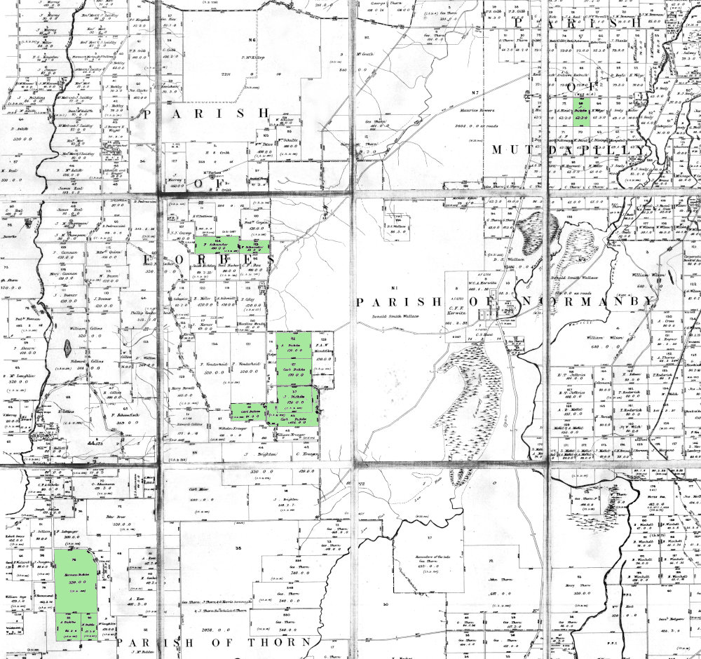
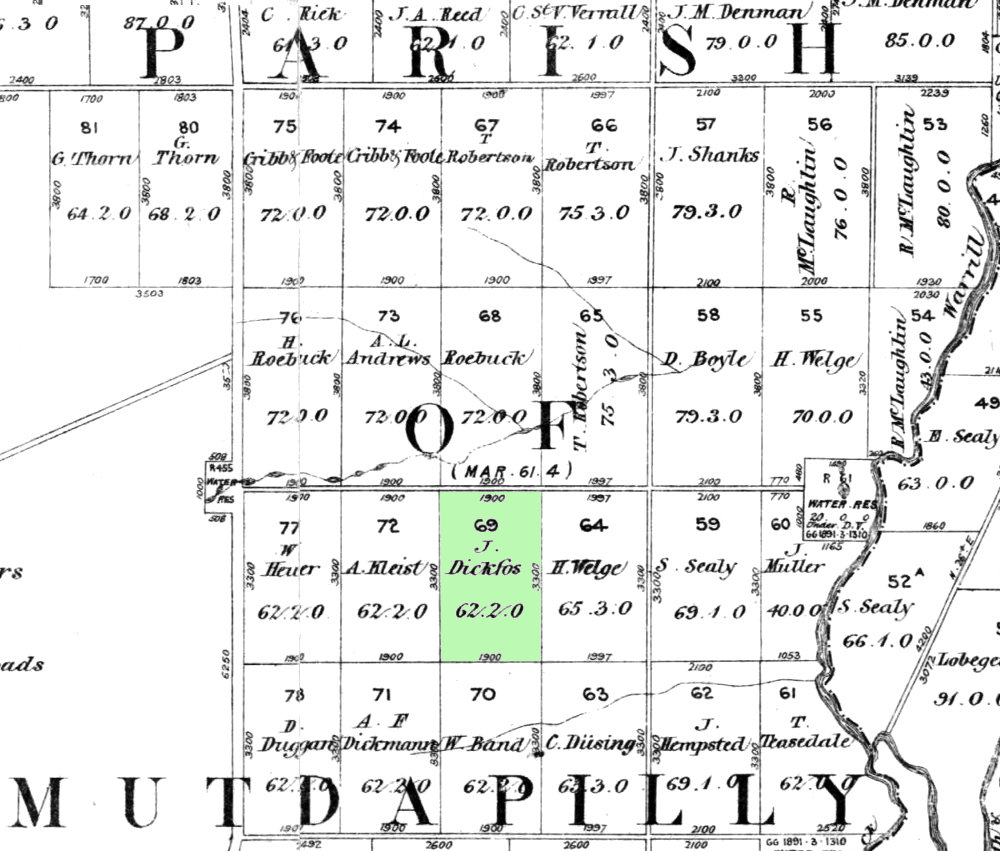
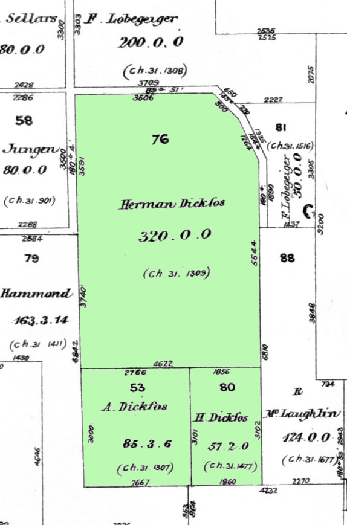
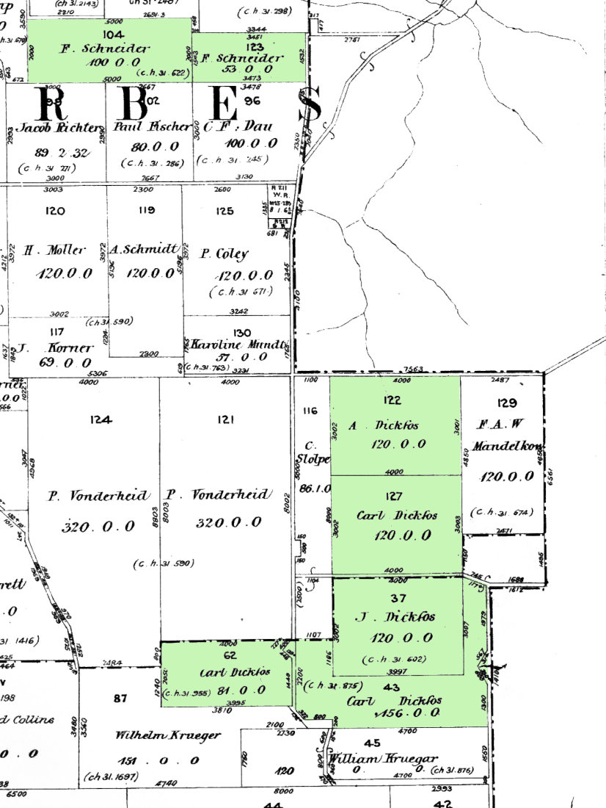
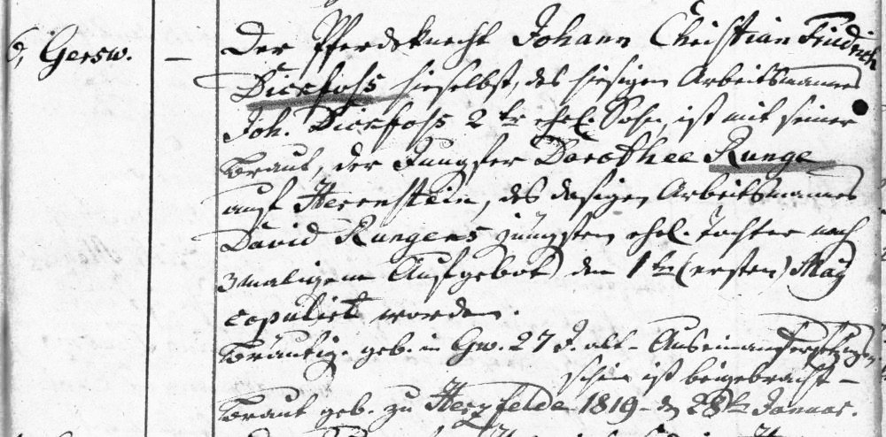
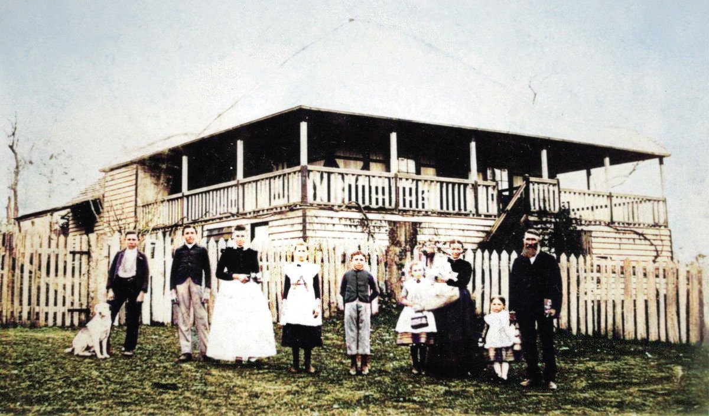
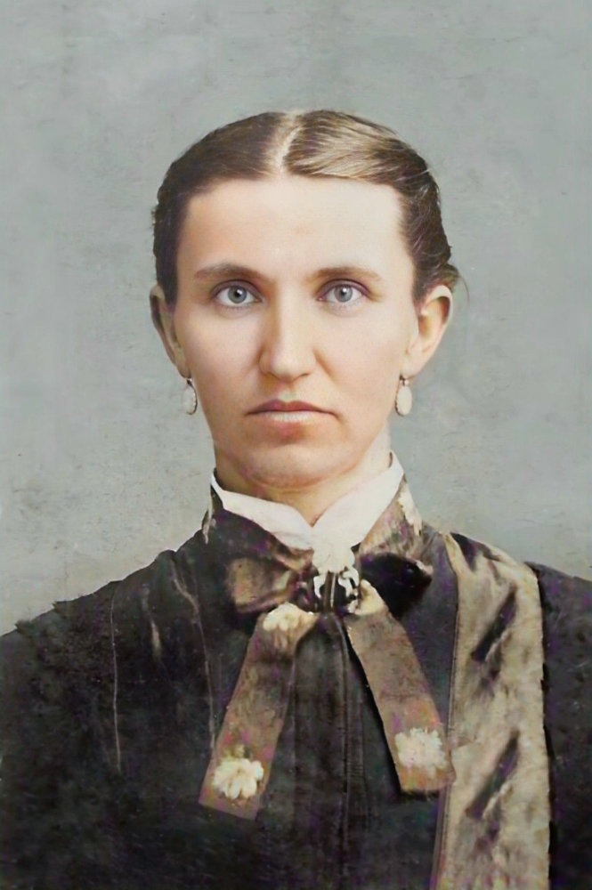

Any image can be clicked to see the full sized version. Click again to close it.
To print the page or search for any name, consider showing all the families first.
At least two lines of the Dickfos family sailed to Australia in 1865 from the Uckermark of the far north of what is now Germany. The distant origins of both the family and the family-name have eluded many researchers over the years.
With much effort though, some information has come to light about those two families who voyaged in 1865. The two families mentioned here both descended from Johann Ludwig Dickfoss (1771/1777 to 1848) but from different marriages, the details of which are outlined in the tables below.
» Johann Ludwig Dickfoss (1771 (or 1777) – 02.04.1848)
(Soldier, Grenadier)
married Dorothea Sophia Radloff (17.03.1771 – 05.01.1806)
in Neuruppin, 25.09.1803
and they had the following child:
Johann Carl Friedrich Ludwig Dickfoss
02.12.1804 –
*Neuruppin
19.12.1878
†Herrenstein, Gerswalde
m. Dorothea Elisabeth Groth in Mittenwalde, 09.11.1828
Johann Carl Friedrich Ludwig Dickfoss and Dorothea Groth had the following children:
August Friedrich Wilhelm Dickfoss
17.09.1829 –
*Mittenwalde
12.10.1866
†Gerswalde
m. Dorothea Louisa Neuendorf in Germany, abt 1852
(sister of Johann Carl Martin Neuendorf who married August's sister Johanna)
August Friedrich Wilhelm Dickfoss and Dorothea Louisa Neuendorf had the following children:
Carl Friedrich "Wilhelm" August Diekfoss
09.09.1853 –
*Gross Sperrenwalde
23.09.1911
†Gerswalde
m. Auguste Wilhelmine Öhmke in Gerswalde, 15.10.1876
Wilhelmine Friederike Louise Dickfos
07.03.1856 –
*Gerswalde
unknown
†unknown
status unknown
Carl Friederich August Dickfos
16.11.1857 –
*Herrenstein
18.01.1862
†Herrenstein
(4 years old)
Friedericke Johanne Auguste Dickfos
26.03.1859 –
*Herrenstein
27.01.1862
†Gerswalde
(almost 3 years old)
Auguste Friederike Louise Diekfoss
30.04.1861 –
*Herrenstein
29.09.1865
†Herrenstein
(4 years old)
Carl Friedrich Wilhelm Dickfos
08.02.1863 –
*Germany
after 1919
†Germany
m. Maria Sophia Dorothea Bull in Goldebee, 12.11.1885
August Friedrich Wilhelm Diekfoss
07.11.1864 –
*Germany
10.09.1865
†Gerswalde
(10 months old)
August Dickfoss
20.08.1866 –
*Gerswalde
11.08.1947
†Rutland, La Salle Illinois, USA
m. Christina Roeder in LaSalle, IL, USA, 28.06.1888
Johanne Wilhelmina Friederike Dickfoss
16.01.1831 –
*Herrenstein, Gerswalde
22.10.1866
†Gerswalde
m. Friedrich Wilhelm Ludwig Pasenow in Gerswalde, 20.11.1853
Johanne Wilhelmina Friederike Dickfoss and Friedrich Wilhelm Ludwig Pasenow had the following children:
Ferdinand Friederich Wilhelm Pasenow
22.07.1854 –
*Gerswalde
unknown
†unknown
status unknown
Friederike Wilhelmine Johanna Pasenow
28.03.1857 –
*Gerswalde
unknown
†Germany
status unknown
Carl Friedrich Wilhelm Pasenow
04.09.1859 –
*Petznick
unknown
†unknown
status unknown
Johanna Wilhelmine Friederike Charlotte Dickfoss
11.09.1835 –
*Gerswalde
23.08.1901
†Tarampa
m. Johann Carl Martin Neuendorf in Gerswalde, 16.09.1860
(brother of Dorothea Louisa Neuendorf who married Johanna's brother August)
(migrated to Queensland, 1865)
Carl Friedrich Wilhelm Dickfoss
11.12.1839 –
*Herrenstein, Gerswalde
27.10.1872
†Ipswich
m. Wilhelmine Caroline Henriette Hass in Gerswalde, 01.05.1864
(migrated to Queensland in 1865)
Johann Carl Friedrich Dickfoss
09.02.1845 –
*Herrenstein, Gerswalde
24.02.1845
†Herrenstein, Gerswalde
(2 weeks old)
1828 Marriage of Johann Carl Friedrich Dickfoss and Dorothea Elisabeth Groth
1853 Marriage of Johann and Dorothea's daughter,
Johanne Wilhelmina Friederike Dickfoss and Friedrich Wilhelm Ludwig Pasenow
1860 Marriage of Johann and Dorothea's daughter,
Johanna Wilhelmine Friederike Charlotte Dickfoss and Johann Carl Martin Neuendorf
1864 Marriage of Carl Friedrich Wilhelm Dickfoss and Wilhelmine Caroline Henriette Hass in Gerswalde
» Johann Ludwig Dickfoss (1771 (or 1777) – 02.04.1848)
(Soldier, Grenadier)
married Anna Luise Bechly (07.11.1785 – 05.10.1836)
in Bucholz, 22.05.1809
and they had the following children:
Johann Friedrich Dickfoss
23.09.1810 –
*Gerswalde
23.08.1866
†Gustow
m. Christine Charlotte Juliane Seewald
Johann Friedrich Dickfoss and Christine Charlotte Juliane Seewald had the following children:
Carl Friedrich Dickfoss
08.12.1833 –
*Fergitz
unknown
†unknown
m. Caroline Johanne Mansky
Caroline Friederike Wilhelmine Dickfoss
29.06.1841 –
*Seehausen
unknown
†unknown
status unknown
Christian Friedrich Wilhelm Dickfoss
14.07.1844 –
*Seehausen
20.08.1866
†Güstow
(2 years old)
Caroline Wilhelmine Dickfoss
03.03.1847 –
*Polßen
unknown
†unknown
m. Christian Carl Friedrich Sellin in Hohengüstow, 22.11.1872
Wilhelm Friedrich Dickfoss
23.06.1850 –
*Schmiedeberg
06.12.1924
†Milwaukee, WI, USA
m. Justine Caroline Wilhelmine Hurtienne
(migrated to USA, arriving July 5, 1888)/td>
Ernestine Wilhelmine Christine Dickfoss
12.08.1855 –
*Germany
24.06.1872
†Güstow
(almost 7 years old)
1850 Birth of Wilhelm Friedrich Dickfoss in Schmiedeberg
1872 Marriage of Caroline Wilhelmine Dickfoss and Christian Carl Friedrich Sellin in Hohengüstow
Christian Friedrich Wilhelm Dickfoss
16.09.1814 –
*Gerswalde
26.12.1814
†Gerswalde
(3 months old)
Johann Christian Friedrich Dickfoss
15.07.1816 –
*Gerswalde
24.09.1894
†Mt Walker
m1. Johanne Friederike Riek in Fergitz, 09.10.1841
m2. Dorothea Runge in Potzlow, 1842
Ernestine Amalie Dickfoss
04.06.1819 –
*Gerswalde
unknown
†unknown
status unknown
Wilhelmine Friederike Luise Dickfoss
21.08.1821 –
*Gerswalde
after 1864
†Germany
m1. Christoph Friedrich Schmoll in Steinhöfel, 15.10.1848
m2. Johann Carl Heinrich Wienke in Steinhöfel, 21.08.1864
Ludwig Friedrich Wilhelm Dickfoss
04.02.1825 –
*Gerswalde
22.05.1826
†Gerswalde
(1 year old)
August Ludwig Ferdinand Dickfoss
28.06.1827 –
*Gerswalde
19.02.1909
†Germany
m. Marie Dorothee Grützner in Lindow, 03.10.1852
August Ludwig Ferdinand Dickfoss and Marie Dorothee Grützner had the following children:
Carl August Dickfoss
15.02.1853 –
*Lindow
19.01.1865
†Lindow
(almost 12 years old)
August Friedrich Christian Dickfoss
14.09.1855 –
*Lindow
unknown
†unknown
m. Wilhelmine Caroline Auguste Gädicke
Marie Friederike Dorothee Dickfoss
29.07.1859 –
*Lindow
30.11.1859
†Lindow
(4 months old)
unnamed female Dickfoss
24.01.1862 –
*Lindow
24.01.1862
†Lindow
(stillborn)
Johann Friedrich Wilhelm Dickfoss
26.02.1863 –
*Lindow
unknown
†unknown
status unknown
Gottfried Wilhelm Johann Dickfoss
02.08.1866 –
*Lindow
14.01.1867
†Lindow
(5 months old)
1852 Marriage of August Ludwig Ferdinand Dickfoss and Marie Dorothee Grützner
First marriage
1803 Marriage of Johann Ludwig Dickfoss and Dorothea Radloff
1804 Birth of Johann Carl Friedrich Ludwig (2 versions)
Second marriage
1809 Marriage of Johann Ludwig Dickfoss and Anna Luise Bechly
1810 Birth of Johann Friedrich Ludwig
1814 Birth of Christian Friedrich Wilhelm
1816 Birth of Johann Christian Friedrich
1821 Birth of Wilhelmine Friederike Luise
1825 Birth of Ludwig Friedrich Wilhelm
1827 Birth of August Ludwig Ferdinand

The relative locations of land selections
Upper right: J. Dickfos 62a Middle: A. Dickfos 120a, Carl Dickfos 120a, 81a, 156a and J. Dickfos 120a Upper Middle: F. Schneider (and Caroline nee Dickfos) 100a, 53a Lower left: Herman Dickfos 320a, A. Dickfos 85a and H.Dickfos 57a
In 1869, when Carl was only 19, he was so keen on selecting land that he applied for it even though he knew full well he was under the minimum required age of 21 - and he was caught out.
New Land
Not long after arriving in Queensland the Dickfos family took to settling the land. Over time, quite a number of selections were taken up by the various members of the family. Shown here is a sample.
1873 Some blocks of land selected by John (Johann) Dickfoss showing that other (later) family members also selected at the same time

The original 62 acres 2 roods of land selected by Johann Dickfos at Mutdapilly
Herman Dickfoss 320a
A. Dickfos 85a
H. Dickfos 57a


A. Dickfos 120a
Carl Dickfos 120a
J. Dickfos 120a
Carl Dickfos 81a
Carl Dickfos 156a
The green area, top-left, shows land selected by Fred and Caroline (Dickfos) Schneider.
The area to the right, marked F.A.W. Mandelkow, was later bought by August and Carl to extend their properties.
Johann Christian Friedrich Dickfoss and Dorothee Runge

1844 Marriage of Johann Christian Friedrich Dickfoss and Dorothee Runge in Gerswalde
» Johann Christian Friedrich Dickfoss
and Johanne Friederike Riek (1st marriage)
and Dorothea Runge (2nd marriage)
Johann Christian Friedrich Dickfoss was born in Gerswalde in 1816 and died in Mt.Walker in 1894.
In 1841 in a place called Fergitz in the Uckermark region of Prussia, Johann married Johanne Friederike Riek (1818-1844) born Strowig, out of wedlock, in Potzlow. Their son, Johann Friedrich August Dickfos (1842-1926) who was born in Gerswalde and eventually died in Ipswich, was married in 1819 to Christine Sophie Schneider (1843-1917) who was born in Eberstadt and died in Coleyville. Christine Sophie was the sister of our 2x great-grandfather, Henry Schneider (sen.). Two of the children from Johann's second marriage also married Henry's siblings.
1841 Marriage of Johanna Riek and Johann Dickfos in Fergitz
Johann's first wife, Johanna, died early in 1844 and Johann remarried a few months later to Dorothea Runge. On the 13th of October, 1865, Johann and Dorothea left their home in Strehlow and migrated to Queensland with their five children. They departed from Hamburg on board the Cesar Godeffroy, a ship newly built in Hamburg in the same year as their departure.
Strehlow is a village in the Uckermark that lies a couple of kilometers north east of the Upper-Ucker-Lake (Oberuckersee). Their particular place of abode was most likely the Gutshof (Estate) belonging to the von Arnim family, originally known as a Ritterhof (Knight's Estate).
The Estate (Gutshof) at Strehlow
Nowadays Strehlow belongs to Potzlow in the district of the Oberuckersee which in turn is part of the Uckermark. The village was first written down in 1317 as Strele, and was later known as Stelow. The name is derived from a Slavic word meaning 'arrow' noting its location on the Mühlgraben which flows into the Ucker River.
The only child from Johann's first marriage to Johanne Friederike Riek, was named Johann Friedrich August Dickfoss, known later as simply August Dickfos, dropping one 's' from the end as was the fashion in Australia. He married Heinricke Sophie Schneider, the daughter of Johann Georg Schneider, in 1869. The eldest son of Johann and Dorothea, Johann Carl Dickfos, married Christine Schneider, another child of Johann Georg Schneider, in 1871. The second youngest child of Johann and Dorothea, Johanna Caroline Wilhelmine Dickfos (Caroline), married another child of Johann Georg Schneider, Gottfried Friedrich (Fred) Schneider, also in 1871.
» "Johann" Christian Friedrich Dickfoss (15.07.1816 – 24.09.1894)
married Johanne Friederike Riek (1818 – 26.02.1844)
in Fergitz, 09.10.1841
and they had the following child:
Johann Friedrich "August" Dickfos
28.12.1842 –
*Gerswalde
08.05.1926
†Ipswich
m. Christine Sophia (Sophie) Schneider in Qld, 11.12.1869
» "Johann" Christian Friedrich Dickfoss (15.07.1816 – 24.09.1894)
married Dorothea Runge (28.01.1819 – 30.08.1896)
in Fergitz, 01.05.1844
and they had the following children:
Johanne Friederike Dorothea Dickfoss
28.07.1845 –
*Gerswalde
01.09.1853
†Gerswalde
(8 years old)
Friedericke Wilhelmine (Minnie) Dickfos
28.10.1847 –
*Gerswalde
23.01.1899
†Glenbrae, Mutdapilly
m. Thomas Robertson in Ipswich, 27.01.1869
Friedericke Wilhelmine "Minnie" Dickfos and Thomas Robertson had the following children:
Peter Robertson
02.06.1878 –
*Qld
09.10.1878
†Qld
(4 months old)
Johann "Carl" Gottlieb Dickfoss
05.04.1850 –
*Fergitz
03.01.1937
†Wynnum
m. Christina Schneider in Ipswich, 01.07.1871
Dorothea Caroline Wilhelmine Dickfoss
18.10.1852 –
*Kaakstedt
15.08.1853
†Gerswalde
(10 months old)
Johanna "Caroline" Wilhelmine Dickfos
04.03.1854 –
*Strehlow
16.07.1953
†Hoya
m. Gottfried Frederich “Fred” Schneider in Ipswich, 08.07.1871
Hermann Wilhelm Christian Dickfos
29.05.1858 –
*Strehlow
12.06.1928
†Ipswich
m. Anna Fischer in Fassifern Valley, 08.05.1879
1850 Birth of Johann Carl Dickfoss
1852 Birth of Dorothea Caroline Wilhelmine Dickfoss
August Dickfoss with his wife Sophie Schneider
» Johann Friedrich "August" Dickfos
and Christine "Sophie" Schneider
August Dickfos must have been a family man in the true sense of the term. Telling from the lack of information in the newspapers about him or his wife Sophie, it can only be assumed that they spent their life looking after their own affairs, farming and raising a family.
The Coleyville farm of August and Sophie Dickfos
A major factor bearing upon their circumspection could have been the sad loss of three of their children who had died in infancy, one after the other, and that Sophie's eldest child, Charles had also died at the age of eleven.
Sophie predeceased August by nine years, passing away at the age of 70, while August managed to live on till he was 83. They both lived to see all of their children who had reached adulthood get married and start families of their own.
Of August's half-siblings who had also migrated to Australia, the eldest, Minnie and the youngest, Hermann, had also passed away by the time of August's death. The other two, Carl and Caroline, lived to 87 and 97 respectively.
During his lifetime, August enlarged his farm by acquiring some of the adjoining land from the Mandelkow family, who became related by his son William's marriage to Edith Mandelkow, August's farm was eventually passed on to his son, Alfred (Alf), who was more of a community man, being involved with the Coleyville Dip Association and even instigating a telephone exchange started in his own home. Alf also actively participated in the school's P&C Association and was both organist and Sunday School teacher for the Baptist Church. He eventually had a new farm, further up the hill, and August moved in with him after Christine passed away.
Louisa Ada Dickfos and Adolph Schmidt (married 11th May 1905)
Frederick Henselin and Wilhelmine Dickfos (married 18th September 1890)
Emma Dickfos and August Grunhagen (married 8th May, 1912)
August Dickfos at the home of his son, Alf, in Coleyville, 13th October, 1917.
4 generations: Wilhelmina (Dickfos) Henselin (1871-1949),
Helena Ida (Henselin) Moller (1893-1969),
Beryl Bethsaida (Moller) Holland (1925-) holding
Lorrelle Carol Erskine Holland (1948-)
(Lorelle married Henry Zbyzek Palaszczuk,
and their daughter is Annastacia Palaszczuk)
» Johann Friedrich "August" Dickfos (28.12.1842 – 08.05.1926)
married Christine Sophia Schneider (28.11.1843 – 26.01.1917)
in Qld, 11.12.1869
and they had the following children:
Charles Schneider
09.02.1867 –
*Qld
14.03.1878
†Qld
(11 years old)
Wilhelmina Dickfos
25.06.1871 –
*Qld
25.06.1949
†Boonah
m. Friedrich Wilhelm Henselin in Mt Walker, 18.09.1890
Wilhelmina Dickfos and Friedrich Wilhelm Henselin had the following children:
John Henselin
21.10.1891 –
*Boonah
19.07.1953
†Qld
(seemingly unmarried)
Helena Ida Henselin
16.11.1893 –
*Boonah
30.07.1969
†Brisbane
m. Ernest Henry Moller in Qld, 15.05.1923
William Frederick Henselin
24.02.1896 –
*Boonah
26.12.1970
†Qld
m. Lilly Huth in Qld, 16.03.1927
Sarah Elizabeth Lucy Henselin
26.08.1898 –
*Roadvale
15.09.1992
†Qld
m. Herman Frederick Stolz in Brisbane, 09.09.1926
Walter Ferdinand Henselin
20.03.1900 –
*Boonah
14.05.1981
†Gympie
m. Anna Huth in Kalbar, 23.06.1925
Esther Lilly Henselin
15.06.1903 –
*Boonah
22.03.1989
†Qld
m. Herbert Huth in Boonah, 20.12.1927
Eileen May Henselin
26.02.1906 –
*Boonah
20.08.1994
†unknown
m. Edward Frederick Langfeldt in Brisbane, 17.12.1941
Percy Andrew Henselin
02.07.1907 –
*Boonah
02.07.2001
†Qld
m. Edith Louisa May in Ipswich, 18.12.1929
Ambrose Claude Henselin
29.10.1910 –
*Boonah
05.10.1989
†Brisbane
m. Margaret Thelma Brown in Boonah, 12.06.1937
Emma Dickfos
03.05.1873 –
*Qld
07.11.1960
†Toowoomba
m. August Grunhagen in Ipswich, 08.05.1912
William Dickfos
31.10.1875 –
*Qld
18.11.1953
†Qld
m. Edith Mandelkow in Qld, 25.11.1908
William Dickfos and Edith Mandelkow had the following children:
Reginald Claude Dickfos
05.04.1909 –
*Qld
19.11.1984
†Boonah
m. Mary Mavis Scholz in Ipswich, 03.10.1942
Alma Adina Dickfos
09.07.1910 –
*Qld
04.08.1981
†Ipswich
m. Johann Frederick Wilhelm Meier in Qld, 13.08.1930
Martha Dickfos
01.09.1877 –
*unknown
04.09.1877
†unknown
(3 days old)
Charles Dickfos
22.12.1879 –
*unknown
28.12.1879
†Coleyville
(6 days old)
Alfred Dickfos
29.10.1880 –
*Coleyville
02.01.1881
†Coleyville
(2 months old)
August Alfred Dickfos
16.07.1882 –
*Coleyville
08.01.1952
†Ipswich
m. Margaret Veronica Miller in Brisbane, 10.08.1911
August Alfred Dickfos and Margaret Veronica Miller had the following children:
Valma Isabel Dickfos
16.02.1913 –
*Qld
21.05.1990
†Brisbane
(unmarried)
Marjorie Grace Dickfos
10.06.1914 –
*Qld
09.07.1996
†Brisbane
status unknown
Raye Phyllis Dickfos
05.03.1916 –
*Qld
19.09.2006
†Brisbane
status unknown
Gibson Miller Dickfos
03.01.1918 –
*Harrisville
08.05.2008
†Brisbane
m. Muriel Alice Aitken in Ipswich, 15.07.1944
Louisa Ada Dickfos
11.12.1884 –
*Coleyville
21.09.1921
†Ipswich
m. Adolph Schmidt in Qld, 11.05.1905
Louisa Ada Dickfos and Adolph Schmidt had the following children:
Ethel May Schmidt
27.04.1908 –
*Qld
05.10.1988
†Ipswich
m. Michael David Coyne in Qld, 07.09.1927
Olive Louisa Schmidt
17.10.1910 –
*Maryborough
05.03.2005
†Qld
m. Francis Charles (Frank) Smith in Sandgate, 04.02.1939
Irene Elsie Schmidt
30.03.1913 –
*Harrisville
19.03.1989
†Rockhampton
m. George Thomas Millar (or Miller) in Mt Walker, 03.08.1938
Leonard Adolphus Schmidt
31.05.1916 –
*Nambour
04.01.1963
†Ipswich
m. Myrtle Gladys Ruhland in Ma Ma Creek, 20.04.1940
Carl Dickfoss and his wife Christine Schneider
» Johann "Carl" Gottlieb Dickfoss
and Christina Schneider
According to the articles in the Queensland Times dated 2nd July 1931, Carl's father, Johann Dickfos selected land in 1871 at the Normanby Reserve, where Carl worked until he was able to secure his own 120 acres at Coleyville. That was also the year he was married to Christina Schneider and the newly wedded couple remained on that property for the next 27 years.
There they raised a family of five boys and five girls. The farm itself became "an inspiring scene of industry" with a cheese factory, bacon-curing plant and a sugar mill for which horses supplied the power. The products of all this industry were sold in a store established by Carl and successfully run for many years in Ipswich.
Then the couple moved to Redland Bay where they spent a further nine years fruit farming. In 1919 they settled into retirement at their seaside residence in Wynnum, planting, growing and tending to a couple of acres of thriving fruit and vegetables.
Yet life hadn't started out easily for young Carl Dickfos. In an attempt to earn enough money for his father to pay the rent, Carl set out on foot looking for work. His mother had put two shillings and sixpence in his pocket to see him through till he could look after himself. He made it all the way to New England in northern New South Wales still without luck. There he met up with two other travelers and together they approached a station manager who only had enough work for two. So he set out again, intending to return home, covering another 45 miles till reaching Rosenthal. Being Sunday, he rested there for the day and then proceeded on through Drayton, Gatton Bridge, Laidley, Grandchester and finally to a place called Mount Alfred. There he discovered pine was being loaded and saw a man and woman sawing wood. He offered to help and appreciatively found himself five weeks work, securing him enough for his father's rent.
Although Carl lived through the rough days of the bush, he was grateful for having been baptised when only 17 years old and "by the Grace of God I was not greatly affected". He later became a foundation member of the Coleyville Baptist Church, started a Sunday School, led the congregation and for 36 years preached and taught in German. This work he continued later on when he lived in Redland Bay.
Carl even built a barn out of rough slabs on his father's property which served as the church for many years. He was also a member of the original Coleyville school committee and helped build the school without government aid. He was a member of the Mutdapilly Divisional Board and upon formation of the Normanby Council had a seat at the table.
» Johann "Carl" Gottlieb Dickfoss (05.04.1850 – 03.01.1937)
married Christina Schneider (17.09.1850 – 12.01.1942)
in Ipswich, 01.07.1871
and they had the following children:
Charles Dickfos
18.03.1872 –
*Mt Walker
07.10.1947
†Brisbane
m. Annie Laurie Argow in Rosewood, 19.02.1896
Charles Dickfos and Annie Laurie Argow had the following children:
Percy Victor Charles Dickfos
21.08.1897 –
*Qld
27.07.1988
†Brisbane
m. Catherine Dorothy Caporn in Brisbane, 18.01.1919
Violet Mabel Dickfos
08.06.1899 –
*Brisbane
14.02.1957
†Bundaberg
m1. Frank Saunders in Brisbane, 21.04.1917
m2. Frederick Henry Peters in Toogoolawah, 19.11.1919
Elsie Vera Dickfos
24.10.1900 –
*Brisbane
04.03.1994
†Cleveland
m. Alfred Carl Henning in Brisbane, 30.09.1920
Vada Ruby May Dickfos
22.03.1905 –
*Qld
09.06.2003
†Brisbane
m. Alfred Charles Schubel in Qld, 27.02.1926
Mary Ann "Pearl" Victoria Dickfos
15.05.1907 –
*Beenleigh
??.??.2010
†Brisbane
m1. Llewelyn Roberts in Qld, 15.05.1924
m2. Charles Whyte in Brisbane, 30.06.1934
Carl Valentine Argow Dickfos
11.02.1908 –
*Qld
08.02.1977
†Brisbane
status unknown
Richard "Harold" Dickfos
05.03.1913 –
*Brisbane
29.01.1989
†Redland City
m. Dorothy Proudfoot in Qld, 20.11.1941
Frances Rita Dickfos
24.02.1917 –
*Qld
25.02.1917
†Qld
(one day old)
John Dickfos
02.09.1873 –
*Mt Walker
15.11.1955
†Sandgate
m. Ellen Augusta Lawrance in Rosevale, 05.05.1897
John Dickfos and Ellen Augusta Lawrance had the following children:
Mercy May Dickfos
15.03.1898 –
*Coleyville
04.06.1971
†Brisbane
m. John Lee in Brisbane, ??.02.1967
Lousia Alice Dickfos
02.10.1899 –
*Coleyville,
19.09.1989
†Brisbane
m. Manning John Heindorff Claybourn in Brisbane, 07.12.1918
Edmund Albert Dickfos
15.03.1901 –
*Qld
09.02.1978
†Brisbane
m. Clara Eder in Brisbane, 14.07.1923
John Henry Dickfos
19.10.1902 –
*Coleyville
27.10.1999
†Sandgate
m. Gladys Thelma Dighton in Augathella, 21.10.1931
Donald Richard Dickfos
09.08.1904 –
*Degilbo
20.05.1953
†Brisbane
m. Mabel Edna Petersen in Brisbane, 08.04.1939
Roy Cecil Dickfos
01.08.1906 –
*Degilbo
26.01.1986
†Brisbane
m. Lillian Elizabeth Warburton in Brisbane, 04.08.1928
Josephine Glayds Eva Dickfos
18.09.1908 –
*Pialba
28.12.1996
†Brisbane
m. Charles Edward Norris in Brisbane, 17.10.1925
Colin Kenneth Dickfos
26.11.1914 –
*Brisbane
27.08.1996
†Wondai
m. Irene Esther Hart in Brisbane, 27.02.1937
Vera Alma Dickfos
07.07.1920 –
*Brisbane
04.01.1922
†Brisbane
(1 year old)
Allan Vernon Dickfos
15.12.1922 –
*Qld
23.04.2014
†Highfields, Toowoomba
m. Myrtle Lillian Fry in Cairns, 18.05.1946
Martha Dickfos
05.01.1875 –
*Mt Walker
08.07.1876
†Qld
(15 months old)
Martha Dickfos
14.11.1876 –
*Mt Walker
07.01.1947
†Qld
m. Thomas William Lawrence in Mt Walker, 20.01.1897
Martha Dickfos and Thomas William Lawrence had the following children:
Florence Ann Lawrence
04.10.1897 –
*Rosevale
24.07.1977
†Degilbo
m. Cecil Tom Griggs in Qld, 08.11.1918
Stanley Roy Lawrance
16.10.1898 –
*Rosevale
04.11.1966
†Ulverstone, Tasmania
m. Nina Mary Seip in Qld, 04.03.1921
Walter Thomas Lawrance
15.08.1900 –
*Biggenden
16.02.1974
†Brisbane
m. Mary Winifred Korn in Qld, 15.03.1922
Elsie May Lawrence
01.01.1903 –
*Biggenden
10.12.1983
†Wynnum
m. Edward Kimber in Qld, 06.06.1921
Alice Clara Lawrance
29.06.1905 –
*Biggenden
13.04.1987
†Murgon
m. Leslie Robert Beaumont Richards in Qld, 09.06.1926
Ronald Richard Lawrance
02.01.1907 –
*Biggenden
24.06.1983
†Qld
m. Linda Korn in Qld, 18.05.1929
Gladys Martha Lawrance
02.10.1909 –
*Biggenden
10.01.1992
†Brisbane
m. William Thomas George Sawden in Qld, 08.04.1929
Thomas William Lawrence
12.12.1913 –
*Biggenden
10.12.1992
†Brisbane
m. Alice Catherine Forbes in Qld, 03.12.1934
Albert Dickfos
10.03.1878 –
*Mt Walker
26.12.1967
†Toowoomba
m. Charlotte King in Ipswich, 21.04.1903
Albert Dickfos and Charlotte King had the following children:
Alice Louisa Dickfos
25.01.1904 –
*Qld
29.04.1993
†Boonah
m. Gottfried Schumann in Qld, 25.03.1925
Vivian Charlotte Dickfos
27.03.1906 –
*Qld
29.12.1994
†Ipswich
m. John Freeman Yarrow in Qld, 11.06.1927
Carl Henry Alfred Dickfos
28.02.1908 –
*Qld
07.04.2002
†Qld
m. Fanny Emily Yarrow in Qld, 22.04.1931
Phoebe Martha Deborah Dickfos
12.11.1909 –
*Coleyville
20.05.2005
†Riverview
m. Alfred Henry Claydon in unknown, 10.12.1938
Mary Christina Dickfos
27.05.1911 –
*Qld
31.10.2003
†Qld
m. Hector Roy Smith in Qld, 08.04.1933
Frederick (Freidi) Dickfos
10.06.1879 –
*Mt Walker
29.07.1963
†Brisbane
m1. Annie Stewart in Brisbane, 19.10.1904
m2. Sarah Clist in Coleyville, 11.01.1939
m3. May Beryle Clist in Ipswich, 27.09.1941
Freidi Dickfos and Annie Stewart had the following children:
Myrtle Ruby Dickfos
12.11.1905 –
*Qld
26.08.1961
†Brisbane
m. Norman Mcleod Grant in Qld, 18.02.1928
Violet Ruth Dickfos
08.08.1909 –
*Qld
26.03.1982
†Ipswich
m. William Schoenfisch in Qld, 12.09.1928
Sarah Lydia Dickfos
29.05.1881 –
*Qld
26.10.1918
†Harrisville
m. Herbert King in Qld, 23.04.1907
Sarah Lydia Dickfos had the following children:
Sidney Dickfos
22.12.1899 –
*Coleyville
02.03.1965
†Kingaroy
m. Lillian Marie Jorgensen in Greenview, 28.04.1937
Herbert Lawrence Dickfos
27.01.1901 –
*Qld
07.10.1901
†Qld
(9 months old)
Sarah Lydia Dickfos and Herbert King had the following children:
Dorothy Ellen King
07.01.1908 –
*Biggenden
02.03.1908
†Maryborough
(2 months old)
Elizabeth Charlotte King
04.04.1909 –
*Qld
23.03.1958
†Gympie
m. James William Wessling in Qld, 28.08.1941
Henry William King
14.11.1910 –
*Qld
??.??.1954
†Lismore
status unknown
Dorothy Ellen King
09.11.1912 –
*Qld
27.04.1924
†Lismore
(aged 11 years)
Herbert Roy King
23.10.1914 –
*Qld
13.10.1945
†Gympie
m. Evelyn Maud Kerridge in Qld, 22.10.1938
Norman Thomas King
23.10.1916 –
*Qld
16.01.1991
†Pomona
m. Gladys Isabel Kenny in Qld, 07.12.1946
Henry Dickfos
01.01.1883 –
*Mt Walker
08.09.1966
†Coleyville
m. Esther Krueger in Kalbar, 05.09.1906
Henry Dickfos and Esther Krueger had the following children:
Percy Owen Dickfos
07.12.1907 –
*Harrisville
10.08.1995
†Brisbane
m. Vera May Harris in Qld, 21.09.1935
Adelaide Iris Dickfos
26.06.1909 –
*Harrisville
09.07.1985
†Qld
m. Frederich Wilhelm Scholz in Boonah, 23.03.1932
Loris Lorne Dickfos
27.04.1911 –
*Harrisville
15.02.1971
†Wynnum
m. Sydney James David Couch in Vic, 03.02.1940
Stanley Norman Dickfos
12.11.1912 –
*Harrisville
21.11.1914
†Qld
(2 years old)
Oliver Leslie "Les" Dickfos
12.11.1912 –
*Harrisville
27.06.2008
†Qld
m. Georgina Merlein Tryhorn in Ipswich, 11.09.1937
Colin George Dickfos
02.04.1914 –
*Harrisville.
02.03.1977
†Coleyville
m. Violet Louisa Schulze in Mt Walker, 19.02.1936
Dorine Mavis Dickfos
26.05.1920 –
*Harrisville
06.04.1996
†Qld
m. Ronald James Embrey in Ipswich, 29.01.1947
Mervyn Henry Dickfos
11.12.1923 –
*Harrisville
07.12.1983
†Qld
m. Lorna Irene Ruthenberg in Qld, 04.10.1944
Alan Graham Dickfos
31.07.1926 –
*Harrisville
15.12.2000
†Sydney
m. Dulcie May "Dee" Parker in Brisbane, 21.01.1950
Jean Rose Dickfos
27.02.1930 –
*Harrisville
24.08.2012
†Deception Bay
(seemingly unmarried)
Louisa Wilhelmina Dickfos
23.02.1885 –
*Qld
28.06.1967
†Qld
m. Wilhelm (William) Drager in Qld, 07.02.1906
Louisa Wilhelmina Dickfos and Wilhelm (William) Drager had the following children:
Edgar Henry "Eddie" Drager
19.12.1906 –
*Coleyville
11.08.1991
†Qld
m. Ellen Gwendoline Thomas in Qld, 18.04.1936
Gladys Beatrice Drager
6.04.1909 –
*Harrisville
??.??.2003
†Boonah
m. Carl Schoenfisch in Harrisville, 07.08.1929
Leonard William Drager
23.09.1909 –
*Ipswich
10.01.1993
†Ipswich
m. Henrietta Bessie "Ette" Hinrichsen in Ipswich, 07.09.1938
Mabel Marion Drager
16.04.1911 –
*Coleyville
20.01.2000
†unknown
m. Clifford Vincent "Cliff" Hinrichsen in Qld, 01.07.1936
Doris Louisa Drager
21.12.1912 –
*Harrisville
29.06.1999
†Qld
m. Frederick Herbert "Herb" Hinrichsen in Qld, 28.04.1937
Roy Allen Drager
29.10.1915 –
*unknown
06.12.1999
†unknown
m. Mavis Marjorie Mandelkow in Qld, 23.10.1941
Pearl Sylvia Drager
16.06.1921 –
*Wynnum
22.03.1996
†Qld
m. Llewellyn Leslie Mandelkow in Qld, 15.01.1944
The Family of William and Louisa Drager c.1918, Coleyville L-R: Doris, Gladys, Bill, Edgar behind Roy, Louisa (nee Dickfos), Mabel, Leonard
(click to enlarge)
William and Louisa Drager and their children L-R: Leonard, Edgar, Roy L-R: Doris, Pearl, Mabel
Christine (Schneider) Dickfos with her daughter Louisa (Dickfos) Drager, her son Edgar Drager and his daughter Dorothy
Edgar Drager and Ellen Thomas
Gladys Drager and Carl Schoenfisch
Mabel Drager and Cliff Hinrichsen
Doris Drager and Herb Hinrichsen
Roy Drager and Mavis Mandelkow
Pearl Drager and Llewellyn Mandelkow
Emma Amelia Dickfos
13.04.1890 –
*Mt Walker
12.12.1963
†Brisbane
m. Albert Edward Middleton in Qld, 24.11.1909
Emma Amelia Dickfos and Albert Edward (Bert) Middleton had the following children:
Kenneth Read Middleton
09.03.1911 –
*Cleveland
18.04.1984
†Burleigh, Gold Coast
m. Flora McPherson Watkins in Brisbane, 14.09.1940
Evelyn Read Middleton
26.06.1912 –
*Qld
1996
†Qld
m. Jack Angus
Eric Read Middleton
28.01.1914 –
*Cleveland
05.07.1981
†Gold Coast
m. Mabel Elizabeth Wilson in Qld, 13.04.1940
Enid Read Middleton
04.04.1915 –
*Brisbane
1943 or 1951
†Qld
m. David Bell in Qld, 13.06.1936
Ellen Annie (Nellie) Dickfos
05.01.1893 –
*Mt Walker
26.01.1965
†Cleveland
m. John Lee in Wellington Point, 09.12.1914

The Family of Carl and Christine Dickfos , Coleyville, c.1894 L-R:
Fred (15),
Albert (16),
Martha (19),
Sarah Lydia (13),
Henry (11),
Louisa Wilhelmine (9),
Ellen Annie (1),
Christine (44),
Emma Amelia (4),
Carl (44). Not shown:
Charles (22),
John (21)
The Extended Family of Carl and Christine Dickfos
The Family of Carl and Christine Dickfos, at Coleyville Back L-R: Albert, Henry, Fred, John Middle: Emma, Martha, Louisa Front: Charles, Carl, Christine, Nellie
The Farm of Fred Dickfos, the son of Carl and Christine
Alan Dickfos (son of Henry and Esther) and Dulcie May (Dee) Parker (21.01.1950)
Henry Dickfos and Esther Krueger (05.09.1906)
Les Dickos, aged 94 (son of Henry Dickfos and Esther Krueger) c.2006
Caroline Dickfoss with her husband Fred Schneider
» Johanna "Caroline" Wilhelmine Dickfos
and Gottfried Friedrich (Fred) Schneider
Caroline and Fred became grand old pioneers of the Boonah area and could tell many a tale of their hardships and successes across very many decades in early Queensland. They were not only renowned for their long life in the district, Caroline managed to live to the age of 98 years and Fred to 93, which was quite remarkable for the time. Indeed Fred later became well known as "The Grand Old Man of Boonah".
Caroline at the age of ten arrived with her family after a four-month journey from the north of Germany. Upon arrival they journeyed further along the Brisbane and Bremer rivers until reaching Ipswich at a spot close to the site of where the North Ipswich Woollen Mills would stand. From there they moved to Mutdapilly to work for a Mr Nutley and his family, picking cotton. Caroline then went to work for Rev. and Mrs. Heiner at the Lutheran Parsonage in Ipswich.
Later she met Fred Schneider and much later in life still recalled the amusing tale of how the two of them had to ride to Ipswich on horseback to get married. That was in 1871, one week after her brother, Carl, had married Fred's sister, Christine. Two years before that, in 1869, Caroline's eldest brother (a half-brother), August, had married another of Fred's sisters, Sophie.
The young couple first settled at Black Flat in Rosevale and then selected land at the foot of Mt. Walker. Towards the end of 1878, they sold that land and established a farm on some land they selected near Boonah. Of course, at that time the land was just a brigalow scrub and Fred apparently picked up the challenge of clearing it which proved to be a back-breaking task.
Fred was a master wheelwright by profession and built wagons to transport water from the Dugandan Lagoon and also for conveying goods back and forth to Ipswich. Fred also built a church on his property to serve the growing Baptist community. The building was later moved into Church Street in Boonah and remained in service. The couple were not only founding members but also devoted supporters of the Baptist Church. Fred even sent off to America to purchase a Cornish Organ at a cost of 17 pounds so there would be music for the services.
c.1897 - The Family of Fred and Caroline Schneider Back L-R: George, Minnie, Carl, John Front: Emma, Fred, Ben, Caroline, Bill, Frederick, Henry
1931 - Fred and Caroline Schneider at Diamond Wedding Back L-R: Jack, Bill, George, Harry, Charles, Ben Front: Annie, Fred, Caroline, Minnie
» Johanna "Caroline" Wilhelmine Dickfos (04.03.1854 – 16.07.1953)
married Gottfried Frederich (Fred) Schneider (26.01.1841 – 03.07.1934)
in Ipswich, 08.07.1871
and they had the following children:
Ernst Schneider
20.05.1872 –
*Qld
04.06.1872
†Mutdapilly
(2 weeks old)
Anna Margaretta Gertrude Schneider (Annie)
26.05.1873 –
*Mt Walker
06.09.1959
†Boonah
m. August Korner in 1893
Anna Margaretta Gertrude Schneider and August Korner had the following children:
Benjamin Korner
28.10.1893 –
*Qld
28.05.1894
†Qld
(7 months old)
Ellen Amanda Korner
29.08.1895 –
*Qld
3.05.1983
†Ipswich
m. Joseph John Wolter in Qld, 01.10.1919
Alfred Korner
23.10.1897 –
*Qld
05.12.1947
†Qld
m. Emilie Schossow in Qld, 11.08.1920
Emma Korner
18.07.1899 –
*Qld
25.03.1900
†, Qld
(8 months old)
Bertha Korner
13.06.1901 –
*Kalbar
13.06.1901
†Kalbar
(less than 1 day old)
Minnie Korner
23.02.1903 –
*Qld
08.01.1934
†Kalbar
m. Alexander Wolter in Qld, 18.10.1922
Rose 'Rosie' Korner
23.01.1905 –
*Roadvale
09.05.1986
†Brisbane
m. Alexander Andrew Dieckmann in Kulgun, 28.10.1925
Lena Korner
24.02.1907 –
*Qld
28.05.1970
†Toowoomba
m. Ernest Pfeffer in Qld, 03.10.1928
Frederick Korner
??.??.1910 –
*Qld
26.04.1997
†Qld
m. Dorothy Evelyn Williams in Brisbane, 20.03.1940
Percy Korner
12.05.1915 –
*Qld
17.12.1961
†Boonah
(seemingly unmarried)
Carl Schneider (Charles)
22.02.1875 –
*Qld
14.11.1947
†Qld
m. Alice Weston McLean, 24.05.1898
Carl Schneider and Alice Weston McLean had the following children:
Evelyn May Schneider
30.05.1900 –
*Qld
20.12.1986
†Oxley
m. Hermann Podlich in Boonah, 10.10.1917
Minnie Schneider
15.11.1901 –
*Boonah
23.12.1980
†Qld
m. Edward Friedrich Wilhelm Schulz in Qld, 03.08.1921
Sydney Schneider
28.05.1905 –
*Boonah
23.07.2002
†Qld
m. Mona Mary Hammel in Qld, 29.09.1928
Bertie Schneider
10.03.1907 –
*Qld
??.06.1995
†Ipswich
m. Irene Monica Fitzgerald in Ipswich, 11.06.1930
Caroline Scheider
26.08.1908 –
*Boonah
13.01.2001
†Gympie
m. Richard Allan Cooke in Brisbane, 04.06.1932
Carl Leonard Schneider
15.01.1913 –
*Qld
21.08.1968
†Ipswich
m. Lorna Louisa Lillian Neilsen in Lowood, 23.06.1935
Alfred Schneider
21.02.1877 –
*Qld
24.04.1877
†(buried) Mutdapilly
(two months old)
Wilhelmine Schneider (Minnie)
20.03.1878 –
*Mt Walker
05.10.1978
†Brisbane
m. James Harding in Boonah, 25.03.1897
Wilhelmine Schneider and James Harding had the following children:
Maud Violet Harding
02.01.1899 –
*Qld
19.01.1984
†Ipswich
m. Alfred George Maddox in Qld, 20.07.1921
Daisy Caroline Harding
16.09.1900 –
*Qld
01.01.1981
†Qld
m. Charles Henry Phillips in Qld, 1921
Norman Isaac James Harding
03.10.1902 –
*Qld
17.12.1968
†Qld
m. Priscilla Potter in Qld, 21.07.1928
Lilly Estelle Harding
30.07.1910 –
*Qld
24.07.1982
†Qld
m. John William Cowell in Qld, 30.07.1930
Ivy May Harding
06.04.1914 –
*Qld
24.04.2010
†Qld
m. John Harold James Cowell in Qld, 11.05.1935
Victor Frederick James Harding
20.03.1917 –
*Qld
01.06.1958
†Brisbane
status unknown
Mavis Winifred Harding
07.05.1919 –
*Qld
unknown
†unknown
m. John Arthur Price in Qld, 27.12.1938
Frederick George Schneider (George)
07.03.1881 –
*Boonah
11.05.1970
†Brisbane
m. Agnes Mary Hohensee in Qld, 03.05.1905
Frederick George Schneider and Agnes Mary Hohensee had the following children:
Mary Georgina Schneider
?.?.? –
*Boonah
06.08.1978
†Southport
m. Leonard Roy Hollindale in unknown, ?.?.~1953
Myrtle Meriean Schneider
27.02.1906 –
*Boonah
23.10.1984
†Nerang
m. Herbert John Charles McIntosh in Qld, 10.04.1934
Leslie George Schneider
24.08.1907 –
*Qld
05.12.1980
†NSW
m. Caroline Winifred Agnes (Schneider)
Dorothy May Schneider
06.11.1911 –
*Qld
11.05.2003
†Qld
m. Edwin Lewis John O'Shea in Brisbane, 12.06.1937
Cyril George Schneider
16.01.1915 –
*Qld
27.11.1998
†Southport
m. Doris May Lefio (known as Wheeler) in Brisbane, 26.11.1938
Robert Frederick Schneider
24.10.1919 –
*Boonah
24.08.1994
†Nerang
m. Joan Kitty Groom in Qld, 05.06.1944
John Wilfred Schneider
23.10.1921 –
*Boonah
??.12.1990
†Sydney
m. Barbara Joan Cadden
John W Schneider (Jack)
01.10.1882 –
*Qld
18.05.1966
†Qld
m. Elizabeth Mary Niebling in Qld, 22.10.1902
John W Schneider and Elizabeth Mary Niebling had the following children:
Stanley Schneider
30.03.1903 –
*Qld
25.07.1959
†Boonah
m. Helena Louisa Moller in unknown, 18.05.1929
Herbert John Victor Schneider
16.07.1904 –
*Qld
07.01.1983
†Qld
m. Elsie Irene Christensen in unknown, 1927
Victor John Schneider
18.05.1907 –
*Qld
07.07.1989
†Qld
m. Olive Eileen Moller in unknown, 1930
Percy Harold Schneider
27.07.1909 –
*Hoya
02.08.1993
†Qld
m. Gladys May Moller in Qld, 07.10.1931
Phyllis May Schneider
04.05.1917 –
*Murgon
13.05.2011
†Brisbane
m1. Norman Stanley Moller in Qld, 1939
m2. John Frederick McNamee in Brisbane, 1948
Emma Schneider
12.12.1884 –
*Qld
08.04.1907
†Qld
m. John Neibling in Qld, 23.12.1903
Emma Schneider and John Neibling had the following child:
Bernhard Ernest Neibling
20.05.1906 –
*Qld
22.03.1988
†Qld
m. Henrietta Unice Potter in Toowong, 16.09.1931
Friedrich Wilhelm Schneider (Bill)
29.05.1887 –
*Qld
29.08.1978
†Boonah
m. Amelia Rieck in Qld, 30.05.1906
Friedrich Wilhelm Schneider and Amelia Rieck had the following children:
m. Florence Eileen Watson in Southport, 17.10.1934
Robert Roy Schneider
10.12.1914 –
*Boonah
02.12.1915
†Boonah
(almost 1 year old)
May Emma Schneider
12.09.1918 –
*Qld
??.09.2009
†Monto
m. Percy William Muller
Kenneth Norman Schneider
01.05.1921 –
*Qld
25.04.2016
†Ipswich
m. Dorothy May Profke in Dugandan, 19.11.1941
Violet Amelia Schneider
11.04.1923 –
*Boonah
30.12.2007
†Boonah
m. Gilbert Roy Beutel in Qld, 30.10.1942
Lorna Gladys Schneider
07.03.1926 –
*Boonah
11.08.1985
†Qld
m. Cecil Lloyd Schmidt in Boonah, 10.08.1946
Mary Georgina Schneider
28.08.1929 –
*Boonah
06.08.1978
†Southport
m. Leonard Roy Hollindale
Henry Schneider (Harry)
14.06.1889 –
*Hoya
01.09.1984
†Boonah
m. Ethel May Hurford in Boonah, 21.12.1910
Henry Schneider and Ethel May Hurford had the following children:
Alwyn George Edward Schneider
11.12.1911 –
*Qld
20.06.1972
†Qld
status unknown
Beryl Harriett Schneider
05.12.1917 –
*Boonah
unknown
†Toowoomba
m. Arthur James Dagg in Killarney, 14.04.1937
Lois Ruby Ethel Schneider
27.07.1920 –
*Dugandan
13.07.2011
†Qld
m. Norman Clive Brunton in Warwick, 21.12.1938
Frederick G. Schneider (Private, AIF) (Frederick)
30.05.1893 –
*Qld
06.08.1955
†Brisbane
m. Alice Kate Hooper in Qld, 07.03.1912
Frederick Schneider and Alice Kate Hooper had the following child:
Horace Schneider (Lance Sergeant)
26.05.1918 –
*Brisbane
25.10.2014
†Redland Bay
m. Elaine Joyce Ridgway in Qld, 12.09.1944
Benjamin Schneider (Ben)
10.12.1895 –
*Qld
21.07.1975
†Clontarf
m. Edith May Thompson in Qld, 09.04.1921
Benjamin Schneider and Edith May Thompson had the following child:
Marjory Olwen Schneider
26.12.1930 –
*Brisbane
26.07.1981
†Brisbane
m. John Cahill Martin
Fred and Caroline's 60th wedding anniversary
Fred and Caroline at home
Ben and Edith May (28 Jan 1934)
Fred and Caroline's farm on Red Bridge Road, Boonah
Bill Schneider's wife Amelia (Rieck) with her grandchildren: (L-R)
Gaye Schmidt, Dianne, Nola and Howard Beutel
Charles Schneider
In loving memory of Emma who died so very young
Just like Fred and Caroline, many of their descendants also lived long.
Their daughter Minnie Harding nee Schneider lived happily past 100.
August Korner and Anna Schneider
» Hermann Wilhelm Christian Dickfoss
and Anna Fischer

Anna Dickfoss (nee Fischer)
Hermann Wilhelm Christian Dickfoss
Having arrived in Queensland in 1865, the family of the seven year old Herman Dickfos first settled in Churchbank, not far from where Fernvale and Mutdapilly are nowadays. Here they were engaged in cotton picking for the Nutley family.
At the age of 21, Herman married Anne Fischer and the couple took up residence in Rosevale. There they remained farming for 26 years followed by another 8 at Cunningham's Gap where Herman also took a prominent part in the building of the road over the Gap. They then moved to Wynnum and then to Aratula where Herman spent his time in retirement.
It has been noted that Herman "was of a cheerful and jovial disposition and was well liked by a large circle of friends." (QT 16-06-1928)
Herman also took an active interest in local affairs, becoming elected as a member of the Divisional Board in 1893. He had also been contracted to improve the roads around where he lived.
» Hermann Wilhelm Christian Dickfos (29.05.1858 – 12.06.1928)
married Anna Fischer (15.04.1858 – 11.11.1946)
in Fassifern, 08.05.1879
and they had the following children:
Wilhelmine Dickfos (Minnie)
08.06.1880 –
*Rosevale
08.07.1978
†Boonah
m. Frederick William Lobegeiger in Qld, 29.03.1906
Wilhelmine Dickfos and Frederick William Lobegeiger had the following children:
Harold Arthur Lobegeiger
27.02.1907 –
*Qld
25.08.1919
†Qld
(12 years old)
Elsie Louise Lobegeiger
09.12.1908 –
*Qld
28.05.1997
†Qld
m. Donald James Brown
Leslie Clarence Lobegeiger
07.08.1912 –
*Qld
08.08.2003
†Qld
m. Rubina Harriett Hinrichsen in Mt Walker, 13.06.1934
Anna Louisa Dickfos
26.12.1881 –
*Qld
08.03.1950
†Biloela
m. Friedrich (Frederick) Robert Nufer in Qld, 09.10.1900
Anna Louisa Dickfos and Frederick Robert Nufer had the following children:
Louisa Annie Nufer
04.08.1901 –
*Fassifern Valley
01.10.1997
†Ipswich
m. George Gilloway in Qld, 07.04.1922
Unnamed Nufer
??.10.1902 –
*Qld
??.10.1902
†Qld
(less than 1 month old)
Jane Christina Nufer
16.01.1904 –
*Boonah
01.11.1979
†Brisbane
m. Arnold George Rossner in Qld, 26.06.1926
Frederick Robert Nufer
29.04.1905 –
*Boonah
09.02.1990
†Townsville
m1. Paula Lucìa Cortès Castelàn in Qld, 11.05.1927
m2. Martha Evalina Wilken in Qld, 11.05.1927
Annie Amelia Magdalena Nufer
30.07.1906 –
*Boonah
05.12.1988
†Kingaroy
m. George Horrocks in Qld, 30.04.1923
Ivy Agnes Nufer
02.11.1908 –
*Boonah
20.04.1980
†Maryborough
m. John Edward Kelly in Qld, 25.01.1934
Edgar Joseph Nufer
20.10.1911 –
*Harrisville
11.08.1978
†Gladstone
m. Hazel Rose Dash in Biloela, 08.08.1936
Percy Leonard Nufer
07.03.1915 –
*Boonah
17.07.1975
†Townsville
m. Jean Dovey in Qld, 01.07.1938
Royal Edward Nufer
09.03.1917 –
*Qld
27.05.1919
†Ipswich
(2 years old)
Clarence Alexander Nufer
17.11.1919 –
*Qld
24.08.1996
†Rockhampton
m. Katie Irene Haywood in Qld, 08.08.1940
Henry Dickfos
18.10.1883 –
*Mt Walker
28.05.1945
†Boonah
m. Wilhelmina Hobbs in Fassifern Station, 18.10.1906
Henry Dickfos and Wilhelmina Hobbs had the following children:
Herbert George Hobbs
05.08.1899 –
*Qld
11.12.1899
†Qld
(4 months old)
Phyllis May Hobbs
29.06.1902 –
*Fassifern
16.08.1999
†Gatton
m. Clyman William Bartholomai in Cunninghams Gap, 06.08.1924
Mabel Elizabeth Dickfos
22.09.1907 –
*Harrisville
09.03.1998
†Ipswich
m. Heinrich Carl Henselin in Churchill, 14.09.1928
Ellen Caroline Dickfos
13.01.1886 –
*Qld
13.04.1966
†Rosevale
m. Johannes Eric Freice Christensen in Churchill, Ipswich, 17.11.1904
Ellen Caroline Dickfos and Johannes Eric Freice Christensen had the following children:
John Herman Christian Christiansen
27.07.1905 –
*Qld
10.09.1995
†Boonah
m. Constance Ethel Walton in Qld, 10.03.1931
Henry George Christensen
04.05.1907 –
*Qld
??.??.1990
†Qld
m. Beatrice May Christensen in Qld, 23.01.1929
Ernest Alfred Christensen
22.07.1909 –
*Qld
09.05.1987
†Qld
m. Annie Margaret Christensen in Qld, 1932
May Martha Christensen
14.10.1911 –
*Qld
13.11.2006
†Qld
m. Lancel Barden in Qld, 16.03.1935
Roy Clarence Christensen
08.02.1914 –
*Qld
??.??.1992
†Qld
m. Vera Zischke in Qld, 26.02.1938
Sylvia Agnes Christensen
04.06.1917 –
*Rosevale
21.10.1990
†Ipswich
m. Joseph Heinrig Wilhelm Gehrke in Rosewood, 15.06.1940
Lewis Gilbert Christensen
24.05.1919 –
*Rosevale
19.10.1991
†Qld
m. Phyllis May Hartwig in Mt Walker, 21.09.1940
Cyril Garnet Christensen
24.06.1921 –
*Rosevale
??.07.2010
†Rosevale
m. Marjory Rea in Warwick, 24.04.1948
Burnett Lloyd "Bernie" Christensen
18.08.1923 –
*Rosevale
23.05.2009
†Rosevale
status unknown
Myrtle Ruby Christensen
29.10.1925 –
*Rosevale
18.06.2002
†Qld
m. Arthur Selwyn Ruhland, 24.10.1944
Mervyn Ronald Christensen
09.05.1928 –
*Rosevale
26.03.2015
†Rosevale
status unknown
Johann Franz (John) Dickfos
07.07.1888 –
*Mt Walker
11.05.1961
†Qld
m. Caroline Hobbs in Qld, 25.02.1910
Johann Dickfos and Caroline Hobbs had the following children:
Stanley Sydney Hobbs
28.04.1903 –
*Qld
04.05.1959
†Boonah
m. Ellen Rebecca Stenzel in Boonah, 22.08.1934
William John Dickfos
29.01.1911 –
*Qld
29.06.2002
†ld
m. Violet Nicholls in Maryborough, 28.03.1934
Dorothy Caroline Dickfos
20.06.1912 –
*Qld
22.03.1994
†Maryborough
m. George Charles Klupfel in Ipswich, 20.02.1937
Vera Margaret Dickfos
24.03.1914 –
*Qld
??.??.1980
†Qld
m. Samuel Thorne in Qld, 04.01.1941
Ambrose Dickfos
28.12.1915 –
*Qld
04.11.1986
†Ipswich
m. Ivan Lewis Hilton in Qld, 03.06.1936
Adelaide May Dickfos
04.10.1919 –
*Gympie
unknown
†unknown
m. Neil Turnbull in Brisbane, 28.08.1940
Hermann Franz Dickfos
20.12.1890 –
*Qld
15.06.1978
†Bundaberg
m. Johanna Wilhelmine Muller in Qld, 8.05.1924
Wilhelmine Christine Dickfos
07.02.1893 –
*Qld
24.01.1979
†(buried) Coleyville
m. Arnold Arthur Lobegeiger in Qld, 28.06.1911
Wilhelmine Christine Dickfos and Arnold Arthur Lobegeiger had the following children:
Lily Esther Lobegeier
21.09.1911 –
*Qld
20.10.1992
†unknown
m. Victor Maurice Christensen, 14.10.1931
Leonard Arthur Lobegeier
04.06.1914 –
*Silverdale
unknown
†Boonah
m. Thelma Joan Henkey in Kalbar, 17.12.1938
Elfreda Stella Lobegeiger
08.03.1917 –
*Qld
10.10.1992
†Qld
m. Rob Roy Gordon Christensen in Silverdale, 1941
Arnold Mervyn Lobegeiger
24.11.1919 –
*Harrisville
??.09.2010
†Kalbar
status unknown
Wilfred Allan Lobegeiger
23.11.1921 –
*Harrisville
21.01.2007
†Qld
status unknown
Carl Frederick Dickfos
16.05.1895 –
*Qld
??.??.1985
†Toowoomba
m. Martha Louisa Stringer in Qld, 04.11.1932
Margaret Ann Dickfos
06.10.1897 –
*Qld
24.04.1989
†Qld
m. Frederick Schossow in Qld, 13.12.1916
Margaret Ann Dickfos and Frederick Schossow had the following children:
Dorothy Pearl Schossow
27.06.1917 –
*Qld
09.08.1990
†Qld
m. William Muller in Qld, 26.10.1938
Ethel Margaret Schossow
25.11.1922 –
*Fassifern
19.11.2006
†Brisbane
m. Dalgleish Dale Herron in Moorooka, 03.08.1946
Teresa Sarah Dickfos
30.04.1900 –
*Ipswich
19.08.1976
†Bribie Island
m. Hermann Carl Muller in Qld, 09.08.1917
Queensland Times 13th June, 1913
Herman and Annie (Fischer) Dickfoss in later years
(probably around the mid 1920s)
Teresa Sarah Dickfos and Hermann Carl Muller
Margaret Ann Dickfos and Frederick Schossow
Ethel Schossow, daughter of Margaret Ann (Dickfos) and Frederick Schossow
Three Dickfos sisters: Margaret Ann Schossow, Minnie Lobegeiger and Christina Lobegeiger
» Johanna "Wilhelmine" Friederike Charlotte Dickfoss
and Johann "Karl" Martin Neuendorf
Johann "Karl" Martin Neuendorf
Johanna "Wilhelmine" Friederike Charlotte Neuendorf (nee Dickfoss)
Karl and Wilhelmine voyaged to Australia in 1865 on board the "Wandrahm" but the passage was nothing short of horrendous, having lost both their children during the trip. According to the research of Allan L. Neuendorf, the couple first settled in the Lockyer valley where they had a further six children.
Allan also told a story which had been passed on down through the generations. When his ancestor, August Neuendorf, was released from the quarantine of the ship La Rochelle, he went into town and ran into his cousin. He was unaware that that they had both migrated to Australia at almost the same time. It is not definite but very likely that this cousin was Karl who had also just been released from quarantine since the Wandrahm had arrived only two weeks after the La Rochelle which had even more deaths occur on board.
» Johanna Wilhelmine Friederike Charlotte Dickfoss (11.09.1835 – 23.08.1901)
married Johann Karl Martin Neuendorf (27.04.1833 – 13.01.1899)
in Gerswalde, 16.09.1860
and they had the following children:
Karl Friedrich Wilhelm Neuendorf
10.06.1861 –
*Herrenstein, Gerswalde
08.01.1866
†At Sea off Somerset England
(5 years old)
Karoline Friederike Wilhelmine Neuendorf
17.03.1864 –
*Herrenstein
07.10.1865
†At Sea
(one year old)
Friederike Wilhelmine Karoline Neuendorf
31.08.1865 –
*Gerswalde
07.09.1865
†Germany
(7 days old)
Karl Friedrich Wilhelm Neuendorf
01.06.1867 –
*Oxley
8.08.1934
†Lowood
m. Catharine Marie Hauschildt in Tarampa, 17.04.1889
Carl Friedrich Wilhelm Neuendorf and Catharine Marie Hauschildt had the following children:
Ferdinand Neuendorf
31.05.1890 –
*Tarampa
4.01.1940
†Brisbane
m. Katie Johanna Dahm in Blenheim, 15.01.1919
Wilhelm Charles Neuendorf
14.06.1891 –
*Tarampa
16.07.1976
†Ipswich
m. Anna Mathilde Dahm in Blenheim, 24.02.1915
Anna Neuendorf
17.08.1892 –
*Tarampa
12.11.1959
†Brisbane
m. Wilhelm Friedrich Bick in Tarampa, 09.08.1916
Lena Neuendorf
9.01.1894 –
*Tarampa
9.09.1980
†Ipswich
m. Wilhelm Friedrich Carl Litzow in Tarampa, 14.06.1916
Martha Neuendorf
13.09.1895 –
*Tarampa
01.08.1930
†Ipswich
m. Frank Robert Kickbusch in Tarampa, 12.03.1924
Arthur Neuendorf
8.01.1898 –
*Tarampa
16.02.1990
†Qld
m. Mary Ellen Goodman in Lowood, 10.05.1922
Agnes Neuendorf
13.08.1900 –
*Tarampa
04.05.1981
†Lowood
m. August Frederick William Schulz in Tarampa, 21.09.1921
Alice Neuendorf
8.08.1903 –
*Tarampa
2.10.1984
†Monto
m. Adolph Arthur Litzow in Tarampa, 21.01.1925
Wilhelmine Neuendorf
05.03.1869 –
*Minden
27.08.1942
†Murgon
m. Johann Bischoff in Mount Tarampa, 20.05.1886
Wilhelmine Neuendorf and Johann Bischoff had the following children:
Friedrich Bischoff
28.08.1887 –
*Hillside, Lowood
27.06.1896
†Hillside, Lowood
status unknown
Marie Bischoff
26.01.1889 –
*Qld
18.05.1960
†Brisbane
m. John Mollenhauer in Tarampa, 03.06.1912
Minna Bischoff
18.08.1890 –
*Qld
08.09.1982
†Murgon
m. Hermann Mollenhauer in Qld, 06.06.1917
Annie Bischoff
30.06.1892 –
*Tarampa
04.04.1976
†Silkstone
m. Friedrich Jackwitz in Hillside, 11.06.1914
Wilhelm Bischoff
22.04.1894 –
*Tarampa
31.08.1986
†Ipswich
m. Maria Anna Beitzel in Roadvale, 29.08.1918
Carl Bischoff
29.08.1897 –
*Hillside, Lowood
01.10.1971
†Cleveland
m. Lillian Ada Liesegang in Kingaroy, 26.11.1925
Johann August Bischoff
29.12.1901 –
*Lowood
30.11.1983
†Biloela
m. Auguste Schuler in Qld, 13.11.1923
Gustav Bischoff
11.02.1905 –
*Qld
04.04.1990
†Goomeri
m. Ellen Mary Rose in Murgon, 15.01.1940
Ellen Bischoff
07.07.1906 –
*Hillside, Lowood
09.04.1985
†Brisbane
status unknown
Hilda Bischoff
12.02.1908 –
*Lowood
09.01.1909
†Minden.
status unknown
Edward Bischoff
15.12.1910 –
*Hillside, Lowood
04.04.1988
†Qld
m. Esther Grace Bradford in Nanango, 15.06.1940
Helena (Lina) Neuendorf
11.05.1871 –
*Tarampa
18.06.1942
†Gatton
m. Wilhelm August Ferdinand Olm in Tarampa, 07.12.1892
Lina Neuendorf and Wilhelm August Ferdinand Olm had the following children:
Johanna Olm
16.09.1893 –
*Ropeley
03.04.1940
†Chinchilla
m. Otto Herman August Bein in Ropeley, 05.05.1915
Karl Olm
26.11.1894 –
*Qld
01.01.1899
†Qld
status unknown
Anna Olm
30.04.1896 –
*Qld
28.12.1977
†Brisbane
m. Samuel Joseph Schluter in Gatton, 2.08.1924
Louise Olm
24.07.1897 –
*Ropeley
30.08.1969
†Gatton
m. August Schmidt in Qld, 27.09.1916
Ferdinand Olm
05.07.1899 –
*Ropeley
22.05.1968
†Brisbane
m. Vera May Hintz in Bundaberg, 05.05.1930
Karl Olm
05.09.1901 –
*Ropeley
20.11.1954
†Gatton
m. Elsie Hauser in Ropeley, 12.06.1929
August Olm
27.03.1904 –
*Ropeley
05.03.1975
†Gatton
m. Agnes Martha Zischke in Qld, 23.06.1926
Scharlotte Olm
19.04.1906 –
*Ropeley
29.03.1967
†Laidley
status unknown
Hilda Sara Olm
04.08.1909 –
*Ropeley
19.03.1977
†Gatton
m. Ferdinand Topp in Ropeley, 09.06.1928
Lawrence Hope Olm
19.06.1912 –
*Ropeley
20.05.1996
†Gatton
m. Mary Laffey in Qld, 1936
Wilhelm Neuendorf
21.05.1873 –
*Qld
16.09.1928
†Palmwoods
m. Helena Augusta Edith Arndt in Qld, 10.04.1896
Wilhelm Neuendorf and Helena Augusta Edith Arndt had the following children:
Ethel Mabel Neuendorf
18.06.1897 –
*
25.08.1980
†unknown
m. George William Gaynor, 17.12.1919
Wilhelm Herbert Neuendorf
16.02.1904 –
*Lowood
11.04.1987
†Caloundra
m. Jessie Aileen Holmes in Nambour, 05.01.1928
Harold James Neuendorf
05.12.1906 –
*
24.03.1994
†Maryborough
m. Elizabeth Alice Zackreson, 26.03.1932
Edward Charles Neuendorf
15.07.1909 –
*Wondai
20.09.1972
†Gympie
m. Catherine Dorothy De Vries, 07.06.1941
Leslie Gordon Neuendorf
04.03.1912 –
*Wondai
19.03.1965
†Gympie
m. Evelyn May Pearce in Qld, 1936
Johann Neuendorf
29.08.1875 –
*Wivenhoe
16.02.1958
†Boonah
m. Mary Dickfos in Boonah, 27.04.1896
(the daughter of Carl Friedrich Wilhelm Dickfoss and Wilhelmine Caroline Henriette Hass
» see below)
Johann Neuendorf and Mary Dickfos had the following children:
Helena Neuendorf
22.10.1896 –
*Qld
10.01.1958
†Kalbar
m. William Dörr in Qld, 21.05.1919
Walter Neuendorf
07.02.1899 –
*Tarampa, Esk
18.03.1953
†Brisbane, Austalia
m. Elsie Bischoff in Qld, 26.06.1922
Sarah Neuendorf
22.03.1903 –
*Lowood
16.06.1995
†Buderim
m1. Edward Hermann Venz in Qld, 12.11.1924
m2. Walter Herman Magdalinski in Qld, 1939
Beryl Neuendorf
26.09.1907 –
*Qld
29.06.1974
†Qld
m. David Lotz in Qld, 28.04.1928
Anna Neuendorf
04.08.1878 –
*Toowoomba
02.01.1949
†Chinchilla
m. Johann Frederich Erdmann Olm in Tarampa, 07.07.1896
Anna Neuendorf and Johann Frederich Erdmann Olm had the following children:
Emma Olm
01.01.1897 –
*Bundaberg
09.11.1972
†Bundaberg
m. William Franklin in Bundaberg, 04.12.1934
Sarah Olm
05.07.1898 –
*Ropeley
15.07.1899
†Qld
status unknown
Gertrude Olm
17.08.1900 –
*Ropeley
23.02.1970
†Toowoomba
m. Wilhelm Edward Bein in Brigalow, 16.07.1919
Herbert Olm
07.03.1902 –
*Ropeley
26.10.1964
†Jandowae
m. Elsie Elizabeth Francis in Qld, 22.02.1933
Fred Olm
01.06.1904 –
*Bundaberg
20.11.1995
†Brisbane
m. Rose Ruth Vellnagel in Dalby, 09.01.1935
Ethel Olm
22.06.1907 –
*Ropeley
unknown
†unknown
m. Robert James Heale in Qld, 31.12.1930
Elizabeth aka Eileen Olm
05.04.1910 –
*Bundaberg
unknown
†unknown
m1. Arthur Clark in Bundaberg, 01.06.1933
m2. Nicholas James Fagg in Bundaberg, 18.12.1971
Ruth Olm
18.10.1911 –
*Bundaberg
unknown
†unknown
status unknown
Phillip Olm
05.12.1917 –
*Chinchilla
18.04.1984
†Chinchilla
m. Ruby Loraine Adams
1861 Birth of Karl Friedrich Wilhelm Neuendorf in Herrenstein, Gerswalde
1864 Birth of Caroline Friederike Wilhelmine Neuendorf in Herrenstein, Gerswalde
1865 Birth of Friederike Wilhelmine Caroline Neuendorf in Herrenstein, Gerswalde
Annie (Neuendorf) and Johann Friedrick Erdmann Olm
Carl's son William was in the news, 16th April, 1989
» Carl Friedrich Wilhelm Dickfoss
and Wilhelmine Caroline Henriette Hass
» Carl Friedrich Wilhelm Dickfoss (11.12.1839 – 27.10.1872)
married Wilhelmine Caroline Henriette Hass (10.08.1843 – 02.11.1899)
in Gerswalde, 01.05.1864
and they had the following children:
Carl Friedrich August Dickfoss
03.04.1864 –
*Herrenstein, Gerswalde
14.09.1865
†At sea aboard the Wandrahm
(one year old)
William Dickfoss
??.??.1865 –
*At sea aboard the Wandrahm
01.03.1876
†Wivenhoe
(about 10 years old)
Helena Dickfoss
09.07.1868 –
*Ipswich
18.12.1910
†Brisbane
m. Wilhelm Friedrich Adermann in Ipswich, 06.05.1885
Helena Dickfoss and Wilhelm Friedrich Adermann had the following children:
Martha Helena Adermann
16.02.1886 –
*Qld
21.08.1969
†Qld
m. James Reece Watkins in Red Hill, 18.09.1911
Auguste Helena Adermann
16.02.1886 –
*Qld
10.08.1971
†Bundaberg Qld
m. Samuel Walter Miller in Qld, 28.04.1909
Hermann Wilhelm Adermann
09.12.1887 –
*Qld
10.04.1934
†Ipswich
m. Myriam Jimmieson in Qld, 10.09.1915
Wilhelm Joseph Adermann
23.02.1890 –
*Qld
30.08.1893
†Qld
(3 years old)
Ernest Friedrich Adermann
05.04.1891 –
*Qld
23.11.1891
†Qld
(7 months old)
Alma Mary Adermann
21.08.1893 –
*Qld
03.03.1895
†Qld
(almost 2 years old)
Wilhelm Friedrich Adermann
22.11.1894 –
*Qld
after 1910
†unknown
(about 16 years old)
Mary Helena Adermann
25.12.1896 –
*Qld
25.12.1896
†Qld
(less than 1 day old)
Edward William Adermann
08.02.1898 –
*Qld
08.02.1898
†Qld
(less than 1 day old)
Arona Mary Adermann
10.10.1899 –
*Qld
15.05.1901
†Qld
(1 year old)
Helena Martha Adermann
11.01.1901 –
*Qld
unknown
†unknown
m. David Jimmieson in Qld, 03.12.1921
Annie Matilda Adermann
02.11.1902 –
*Qld
10.02.1903
†Qld
(3 months old)
Mary Louisa Adermann
10.08.1904 –
*Qld
08.07.1958
†Qld
m. Robert James Clements in Qld, 05.09.1931
Rose Helena Adermann
03.04.1906 –
*Qld
27.01.1964
†Qld
m. Daniel Joseph Cleary in Brisbane, 10.12.1925
Emelie Dickfoss (Emily)
10.05.1870 –
*Ipswich
27.05.1951
†Charters Towers
m. William Nash in Ipswich, 25.11.1890
Emelie (Emily) Dickfoss and William Nash had the following children:
Elizabeth Nash
03.11.1891 –
*Qld
09.11.1891
†Qld
(6 days old)
Mary Nash
04.10.1892 –
*Townsville
08.02.1962
†Townsville
m. Thorleif Kaspar Leandar Pedersen in Qld, 23.08.1913
William Nash
04.10.1892 –
*Townsville
17.03.1968
†Townsville
m. Evelyn May Frazer in Qld, 12.02.1921
Annie Bella Nash
24.06.1895 –
*Aitkenvale
26.01.1924
†Sydney
m. Arthur Thomas James Wilson in NSW, 1922
George William Nash
06.08.1896 –
*Qld
20.09.1984
†Mundingburra
m. Rose Maud Milton in Qld, 26.08.1916
Arthur Henry Nash
23.06.1898 –
*Qld
22.07.1949
†Qld
(seemingly unmarried)
Robert Nash
20.09.1900 –
*Townsville
08.11.1951
†Townsville
m. Mary Frances Greer in Townsville, 04.06.1930
Charles Nash
25.02.1904 –
*Qld
03.05.1993
†Townsville
m. Florence Emily Keown in Townsville, 29.10.1931
Mary Dickfoss
25.02.1872 –
*Mt Walker
01.08.1941
†Hoya
m. Johann Neuendorf in Boonah, 27.04.1896
(son of Johann Carl Martin Neuendorf and Johanna Wilhelmine Friederike Charlotte Dickfoss,
» see above)
Mary Dickfos and Johann Neuendorf had the following children:
Helena Neuendorf
22.10.1896 –
*Qld
10.01.1958
†Kalbar
m. William Dörr in Qld, 21.05.1919
Walter Neuendorf
07.02.1899 –
*Tarampa, Esk
18.03.1953
†Brisbane, Austalia
m. Elsie Bischoff in Qld, 26.06.1922
Sarah Neuendorf
22.03.1903 –
*Lowood
16.06.1995
†Buderim
m1. Edward Hermann Venz in Qld, 12.11.1924
m2. Walter Herman Magdalinski in Qld, 16.09.1939
Beryl Neuendorf
26.09.1907 –
*Qld
29.06.1974
†Qld
m. David Lotz in Kalbar, 28.04.1928
1864 Marriage of Carl Friedrich Wilhelm Dickfoss and Wilhelmine Caroline Henriette Hass in Gerswalde
1864 Birth of Carl Friedrich August Dickfoss in Gerswalde
Carl Friedrich Wilhelm Dickfos, or Wilhelm as he was called on the ship's record in 1865, only lived to the age of 32 years, just six years after having arrived in Queensland.
Eight months after he died, his widow Henrietta remarried on 12.06.1873 to Wilhelm Kickbusch.
The family of Mary (Dickfoss) and Johann Neuendorf L-R: Walter, Sarah, Johann, Helena, Beryl, Mary
The wedding of Mary, the daughter of Emily (Dickfoss) Nash and William Nash L-R: Emily, Mary (bride), Thorlief Pederson (groom), William
Emily (Dickfoss) Nash (1870-1951) (on the right) with a friend at Cluden Races, Townsville
1876 Death of William Dickfos, aged 9 (Qld Times Tue 28 Mar 1876 p6)
William survived having been born on the ill-fated ship, the Wandrahm, but still tragically died early.


 1803 Marriage of Johann Ludwig Dickfoss
1803 Marriage of Johann Ludwig Dickfoss  1804 Birth of Johann Carl Friedrich Ludwig (2 versions)
1804 Birth of Johann Carl Friedrich Ludwig (2 versions)
 1809 Marriage of Johann Ludwig Dickfoss
1809 Marriage of Johann Ludwig Dickfoss  1816 Birth of Johann Christian Friedrich
1816 Birth of Johann Christian Friedrich
 1821 Birth of Wilhelmine Friederike Luise
1821 Birth of Wilhelmine Friederike Luise
 1825 Birth of Ludwig Friedrich Wilhelm
1825 Birth of Ludwig Friedrich Wilhelm
 1827 Birth of August Ludwig Ferdinand
1827 Birth of August Ludwig Ferdinand


 1850 Birth of Johann Carl Dickfoss
1850 Birth of Johann Carl Dickfoss